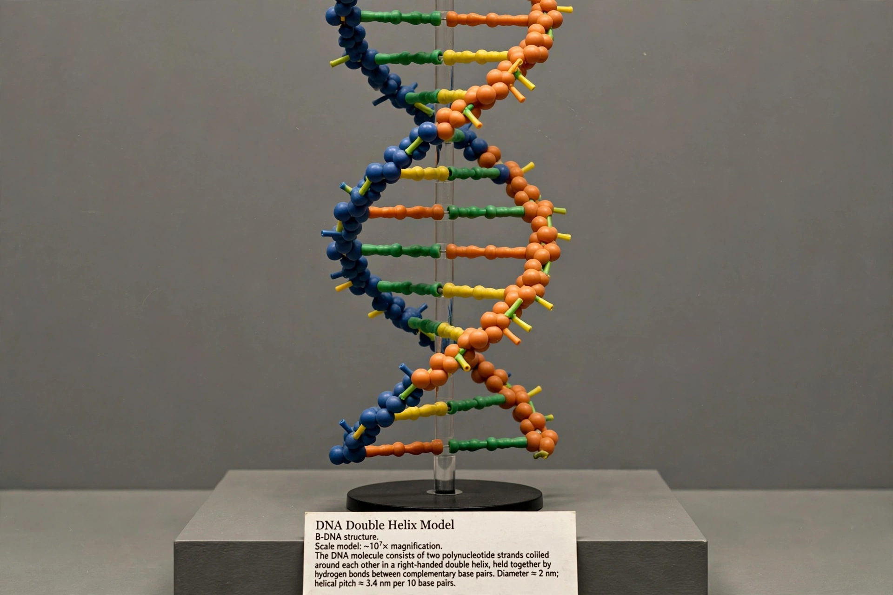

DNA
From Wikipedia, the free encyclopedia

Note: this entry recreates the article on the double helix structure. Deoxyribonucleic acid (DNA) is a polymer composed of two polynucleotide chains that coil around each other to form a double helix, carrying genetic instructions for the development, functioning, growth and reproduction of all known organisms and many viruses. The structure was determined in 1953 by James Watson and Francis Crick at Cambridge, building on X-ray diffraction data from Rosalind Franklin and Maurice Wilkins at King's College London.
Structure
Each strand is a chain of Nucleotides — a sugar (deoxyribose), a phosphate and one of four bases: adenine (A), thymine (T), guanine (G) and cytosine (C). The strands are antiparallel and held together by hydrogen bonds between complementary bases (A–T, G–C), the pairing that both stabilises the molecule and explains how it copies itself. The common B-DNA helix turns every 3.4 nanometres with about 10.5 base pairs per turn, its major and minor grooves read by proteins.
Function
DNA stores the genome: genes are transcribed into RNA and translated into proteins, while regulatory sequences control when and where. Replication is semi-conservative (each strand templates a new partner), as the Meselson–Stahl experiment confirmed in 1958. Mutations, repair systems and recombination make DNA both archive and engine of evolution.
The 1953 story
Watson and Crick's one-page Nature paper of 25 April 1953 ('It has not escaped our notice that the specific pairing we have postulated immediately suggests a possible copying mechanism…') shared the issue with data papers from Wilkins and Franklin; the Nobel (1962) went to Watson, Crick and Wilkins, Franklin having died in 1958 — a distribution long debated in accounts of credit and gender in science.